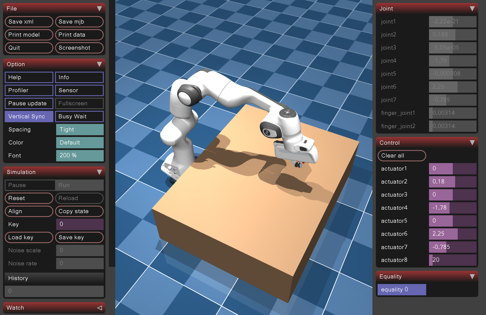

Advanced Learning-based Robotic Arm Control

This project focuses on robotic arm grasping in MuJoCo, covering environment design, reinforcement learning training, and hierarchical reinforcement learning.
Project Highlights
Personal projects, experiments, and small technical builds.

This project focuses on robotic arm grasping in MuJoCo, covering environment design, reinforcement learning training, and hierarchical reinforcement learning.
Project Highlights